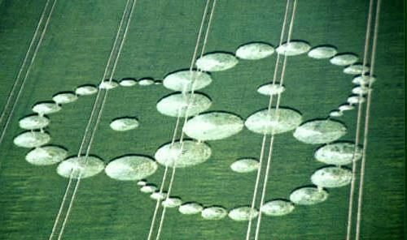
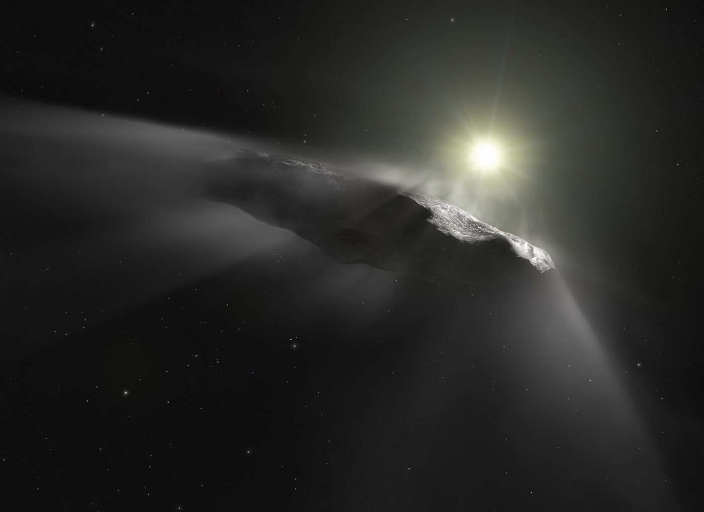
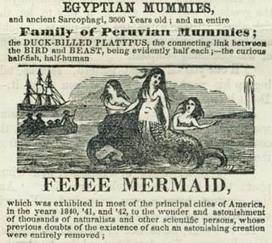
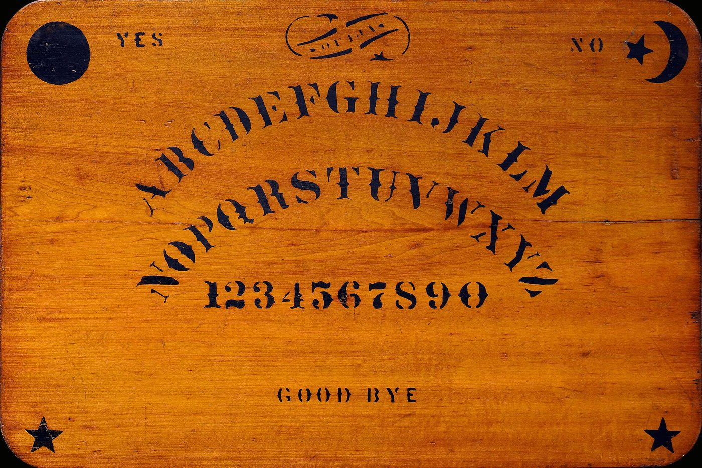

特集
事典の項目を横につないで読む記事です。ばらばらに見える怪異のあいだに、 同じ形が何度も現れます。ここでも、確認されていることと語られていることは分けて書きます。
 特集怪異は、危ない場所に現れる河童は淵に、雪女は雪山に、テケテケは踏切に出る。世界中の怪異の出現場所を並べると、それが人の死にやすい場所と重なっていく。恐怖の話は、警告として作られたのか。
特集怪異は、危ない場所に現れる河童は淵に、雪女は雪山に、テケテケは踏切に出る。世界中の怪異の出現場所を並べると、それが人の死にやすい場所と重なっていく。恐怖の話は、警告として作られたのか。
特集「作り物だった」と分かっても、話は残るボーリー牧師館は記者の演出だった。ミステリーサークルは2人の男が板で作っていた。アミティヴィルは弁護士の前で組み立てられた。それでも話は消えなかった。なぜ種明かしは効かないのか。
特集いまも説明がついていない5つ大半のオカルトには説明がつく。だが、まじめに調べられ、まじめに否定を試みられ、それでも結論が出ていないものがいくつかある。作り話ではなく、単に分かっていないもの。
特集怪物を作った職人たち人魚のミイラ、河童の手、イエティの頭皮。博物館や寺に伝わる怪物の遺物は、科学的に調べられると別のものになる。だがそれは、驚くほど高い技術で作られていた。
特集脳が怪異を作るとき鏡を見つめると顔が崩れる。指を置いた盤が勝手に動く。壁のしみが顔に見える。心理学の実験室で再現できてしまう怪異がいくつもある。それでも怖さは減らない。 特集怪異のせいで殺された人たち狼男とされて処刑された農夫。吸血鬼とされて墓を暴かれた少女。魔女とされて焼かれた女性たち。オカルトの歴史には、話ではなく実際に死んだ人がいる。
特集怪異のせいで殺された人たち狼男とされて処刑された農夫。吸血鬼とされて墓を暴かれた少女。魔女とされて焼かれた女性たち。オカルトの歴史には、話ではなく実際に死んだ人がいる。